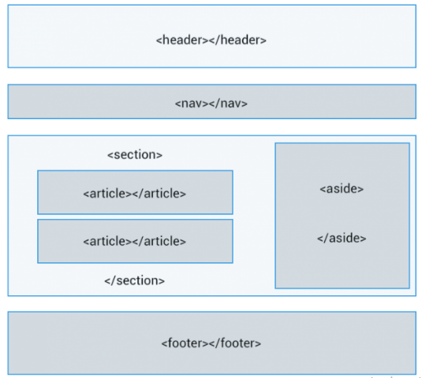

Borrador del contenido
HTML5 ha venido a solucionar, entre otras cosas, la falta de un criterio para definir el contenido semántico de una página web agregando una serie de etiquetas destinadas a facilitar la estructura del documento desde el punto de vista de su significado.
section: Esta etiqueta sirve para agrupar elementos relacionados entre sí de forma temática. Los section creados a nivel del body serán aquellos cuyo contenido de significado a la página, o sea, formen el contenido principal de la misma.
article: Esta etiqueta es «la última etiqueta con significado semántico». Habitualmente se utiliza dentro de un section para separar las unidades de contenido con significado semántico.
header: Creada para incluir información destinada a ayudar en la navegación. Suele incluir un H1 y, de declararse a nivel de body, la etiqueta nav.
nav: Esta etiqueta la utilizaremos para incluir el menú de navegación.
footer: Destinada a incluir la información sobre el elemento que lo contiene (autoría, propiedad, enlaces…)
aside: Su uso indicado es para agrupar el contenido a visualizar en la página, pero que no forma parte del contenido principal de la página.
La estructura básica de una pagina web html5 esta representada en la siguiente imagen:

Referencias Bibliograficas:
Rolando, C. (2003). HTML5 y su estructura básica – PHP paso a paso. Recuperado de https://rolandocaldas.com/php/html5-estructura-basica
Eniun Diseño Web y Marketing Digital. (2020). HTML5, estructura básica y elementos semánticos. Recuperado de https://www.eniun.com/html5-estructura-basica-elementos-semanticos/